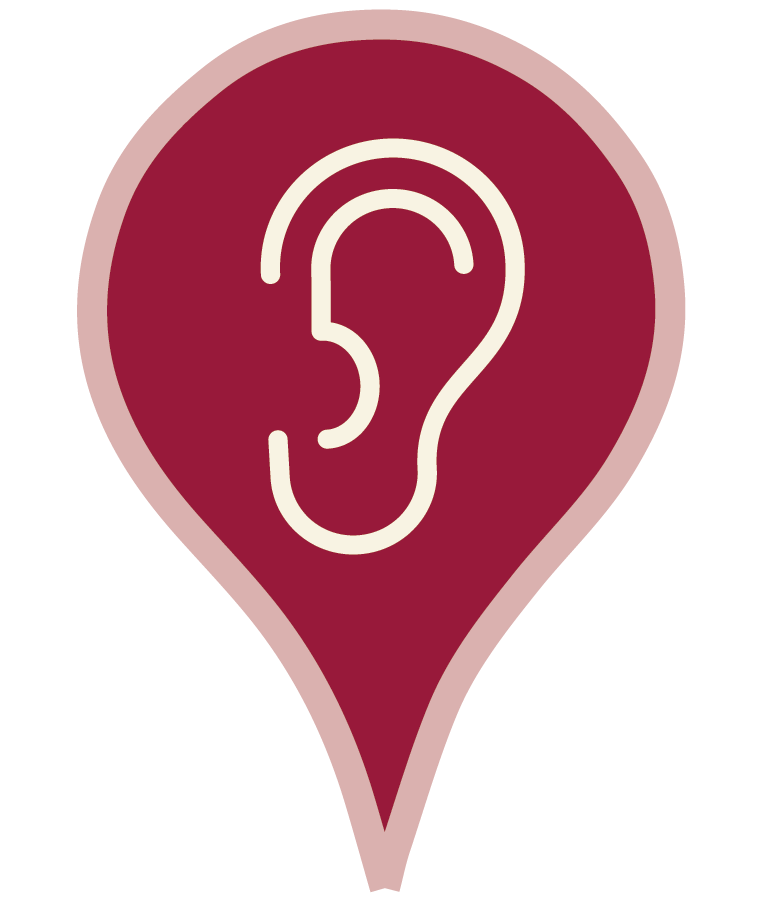

Já colaboraram com o cartografias:
Bernardo Baião, Caroline Trinidade, Clareana Aroxa, Julia Chacur e Wellison Silva.

x
O áudio de seu relato terá no máximo 5 minutos de duração.
Não é necessário se identificar.
Para adicionarmos seu relato ao mapa sonoro informe sua localidade: cidade e bairro, ou permita que o seu dispositivo acesse sua localização.
Ao enviar o áudio você concorda com os termos e autoriza o uso não-comercial de seu relato.
Clique para GRAVAR
Clique para finalizar
(máx. 5 minutos)
Informe sua localização
Altere a permissão de seu microfone para permitir que nosso gravador possa acessá-lo. Recarregue a página e tente novamente.